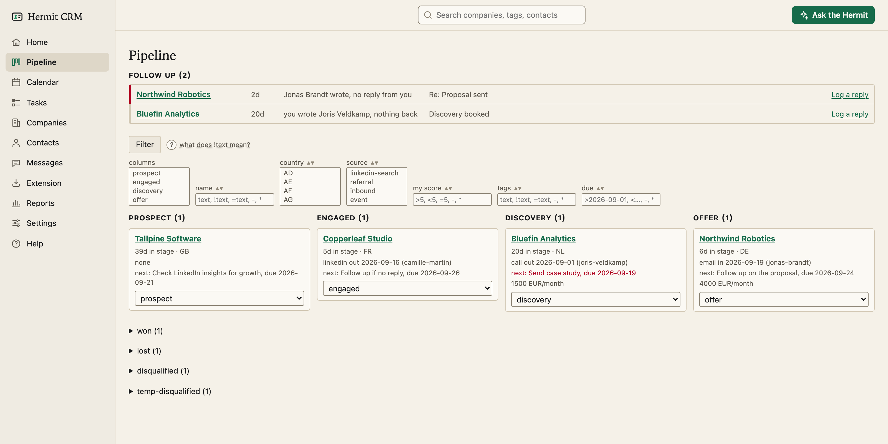
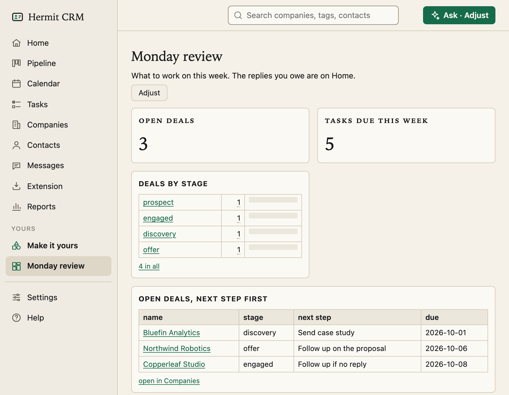
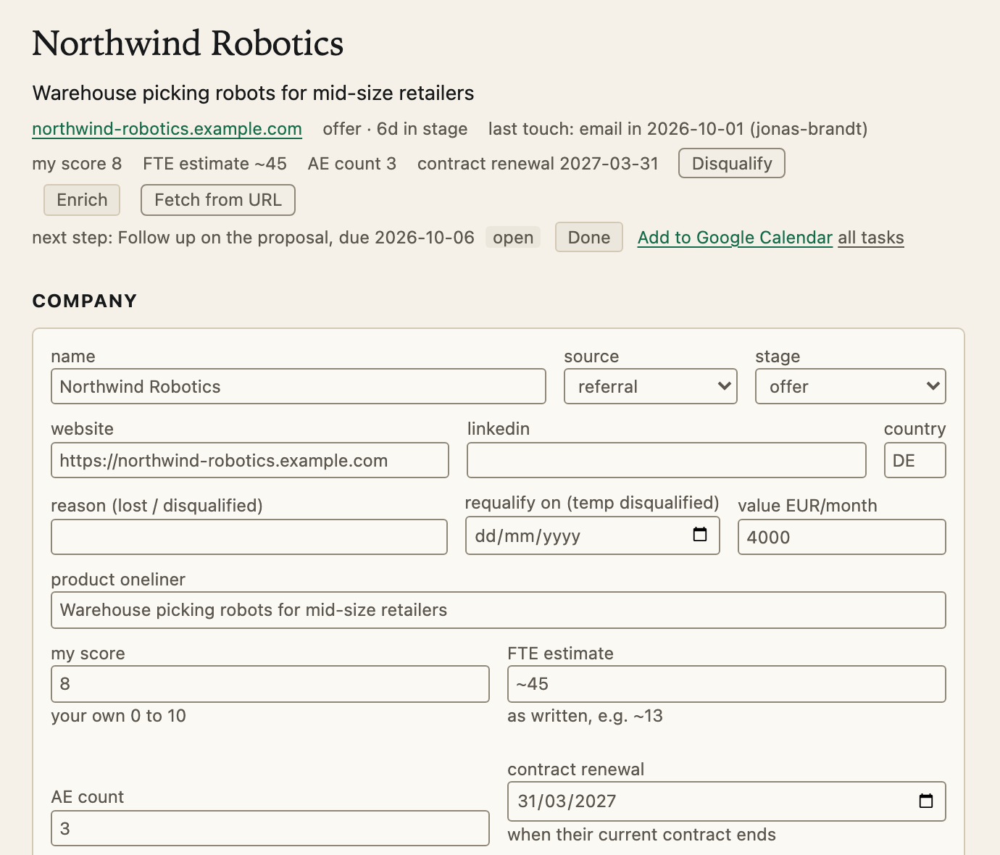
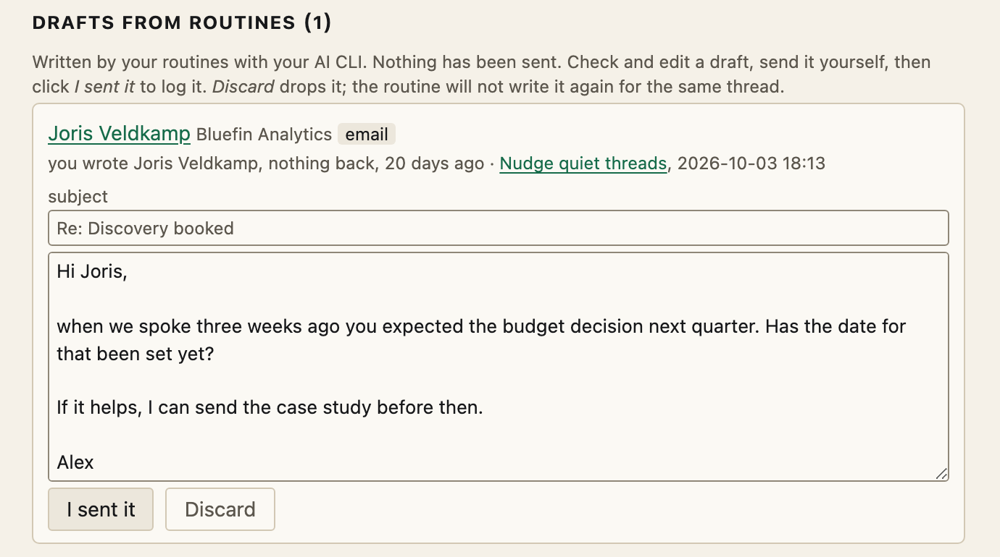

A CRM for one.
A free, open-source CRM for founders, freelancers and anyone doing their own sales. It keeps your companies, contacts and conversations as plain text files on your laptop, and your own AI agent can reshape it to fit how you work. With a pipeline, a calendar, dashboards and enrichment from a company's website.
Install with your AI
- Unpack and open the folder in your AI coding tool: Claude Code, Codex, Cursor, Gemini CLI, Grok Build or another.
- Send it this message:
The idea
One company, one file.

The file behind the Northwind Robotics card:
~/crm/companies/northwind-robotics/company.md
---
name: Northwind Robotics
website: northwind-robotics.com
country: DE
source: referral
stage: offer
stage_changed: 2026-09-15
value_eur_month: 4000
next_step: Follow up on the proposal
next_step_due: 2026-09-24
...
Adjust
Make it yours, with your own AI.
Say what you want in one sentence. Your own AI agent (Claude Code, Codex, Cursor or Gemini CLI) builds it in your data folder, following recipes that come with Hermit, and you see it on the next page load.
-
A dashboard from one sentence
You type
Make a dashboard called Monday review with my open deals, what is due this week and the deals by stage with their value. Pin it to the sidebar.
What changes
One new file,
dashboards/monday-review.toml. The page is pinned in the sidebar, and every number opens the records behind it.
-
A new field
You type
Add a date field contract renewal to companies, shown on the company page and in the companies list.
What changes
Seven lines in
fields.toml. The field shows on every company page, and as a column you can sort and filter in the companies list.
-
A routine that drafts follow-ups
You type
Every morning, for people I messaged 7 days ago without a reply, draft a short follow-up. Never send anything.
What changes
A routine in
routines.toml. It starts paused, so you see first who it would pick. Once you turn it on, its drafts wait on Home for you to edit and send yourself.
Safe to try. Every change is a git commit you can undo in one click. Routines only write drafts: they start paused, and Hermit never sends a message.
What you get
- Pipeline
- A board from prospect to won, plus a follow-up radar for unanswered threads.
- Calendar
- Overdue and due-today next steps, a month view, and a brief before each meeting.
- Companies and contacts
- Sortable tables of companies and people, and one timeline per company of every email, call and meeting.
- Messages
- Outreach drafts in English, German, Dutch or French, in your wording, and the outcome of every message.
- Reports
- Weekly activity, funnel and conversion, time in stage, and which messages get answers.
- Dashboards
- Pages of your own with lists, counts and bar charts. Describe one in a sentence, your AI builds it, and you pin it to the sidebar.
Local. It runs on your computer. Your data is a folder of Markdown files in git, on your own disk.
Your AI is the admin. Plain files, a small CLI and an MCP server, so the agent you already use can read your pipeline, log a call and change how Hermit works. Ask Hermit answers questions on every page.
Yours to change. Press Adjust on any page and describe what you want: a dashboard, a field, a page layout, a routine. Your agent builds it, every change can be undone, and the code is open source.
Questions
Where does my data live?
In a folder on your Mac, ~/crm unless you choose another. Every company, contact and conversation is a Markdown file, and every change is a git commit, so any mistake is one git revert away.
Does anything leave my Mac?
Only what you send. A private git backup, if you add one. The AI tool you ask, when you use Ask Hermit or enrichment. A once-a-day version check with no identifiers, which you can turn off.
Do I need to be a developer?
No. Your AI tool runs the commands and tells you in plain words what it is doing. On a fresh Mac you click Install once in an Apple dialog.
Does it run on Linux?
Yes, but it is less tested than on a Mac. The install is the same: your AI tool checks for git and Python and installs what is missing, which on Linux may ask for your password. There is no keychain on Linux, so the mail password is kept in a file only your user account can read.
Which AI tools work?
For the install, any AI coding tool that can read a file and run commands: Claude Code, Codex, Cursor, Gemini CLI, Grok Build and others. Afterwards, Claude Desktop, ChatGPT, Cursor or any other MCP client can read your pipeline and log interactions.
Does it work with my email and calendar?
Yes, without OAuth. BCC or forward mail to an address such as you+crm@gmail.com and it is logged on the right contact. Past meetings come in from your calendar's secret ICS link (Google, Outlook or iCloud). You type the app password and the link into the Settings page yourself, so they never pass through an AI chat.
Can my team use it?
No. Hermit CRM is built for one person. If you need a team CRM, use one of the others.
How does it compare with HubSpot, Attio or Pipedrive?
Those are hosted CRMs for teams, priced per seat, with your data in their cloud. Hermit CRM is free, for one person, and keeps your data on your own computer. Hermit CRM compared puts it side by side with HubSpot, Attio, Pipedrive, folk, Twenty and Notion, and says when each one is the better choice.
Does it run on Windows?
Not yet. Hermit CRM runs on macOS and Linux.
What does it cost?
Nothing. It is free and open source under the Apache License 2.0. It is alpha software with no warranty and no support; see DISCLAIMER.md in the download.